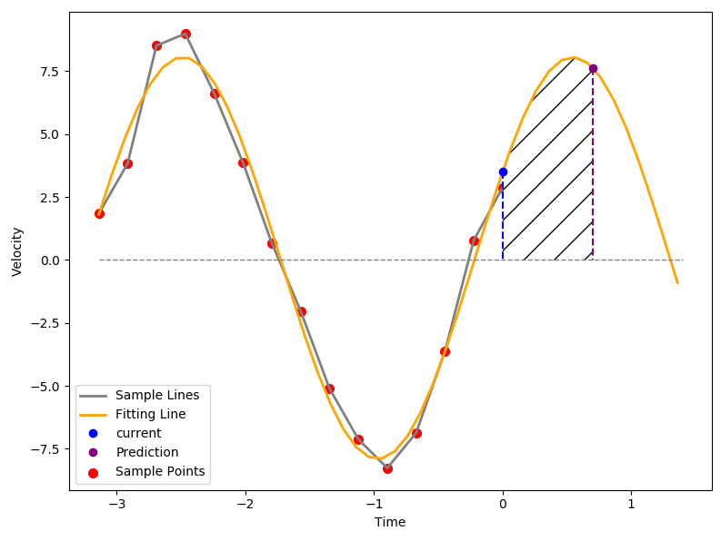
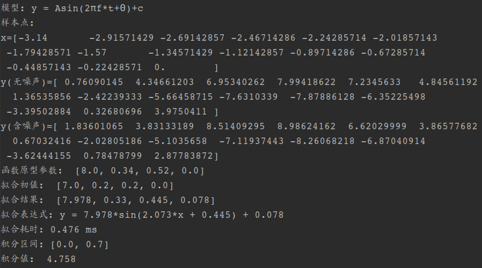

本文总结了最小二乘法针对一元线性方程、多元线性方程与多元非线性方程的回归策略，内容笔记向。
一元线性回归
a = 0，单变量x，单个未知数 b，求解一元一次方程
模型： \(y = ax + b\)
目标函数：\(y = c\)
n个样本点：\((x_i, y_i), i=1,2,3,...,n\)
偏差平方和：\(e = \sum_{i=1}^{n}{(c - y_i)^2}\)
求解过程：
偏差平方和函数： \[ e = \sum_{i=1}^{n}{(c - y_i)^2} \] 对c求导，令导数为0： \[ \frac{de}{dc} = \sum_{i=1}^{n}2(c - y_i) = 0 \] 解关于c的一元一次方程可得： \[ c = \frac{\begin{align}\sum_{i=1}^{n} y_i\end{align}}{n} = \overline y \] 由此可知，拟合一条与x轴平行的直线的最佳参数，就是样本点y值的均值
a \(\not=\) 0，单变量x，两个未知数 a和b，解二元一次方程
模型： \(y = ax + b\)
目标函数：\(y = ax+b\)
n个样本点：\((x_i, y_i), i=1,2,3,...,n\)
偏差平方和：\(e = \sum_{i=1}^{n}{((ax_i+b)) - y_i)^2}\)
求解过程：
偏差平方和函数： \[ e = \sum_{i=1}^{n}{((ax_i+b)) - y_i)^2} \] 对a、b的偏导数： \[ \begin{align} & \frac{\partial e}{\partial a} = \sum_{i=1}^{n}2x_i(ax_i +b-y_i) \\\\ & \frac{\partial e}{\partial b} = \sum_{i=1}^{n}2(ax_i + b-y_i) \\\\ \end{align} \]
同时令e对a和b的偏导等于0： \[ \begin{cases} \begin{align} &\sum_{i=1}^{n} x_i(ax_i+b-y_i) = 0\\\\ &\sum_{i=1}^{n} (ax_i+b-y_i) = 0 \end{align} \end{cases} \] 解关于a、b的二元一次方程组得： \[ \begin{cases} \begin{align} & a = \frac{n\sum x_iy_i - \sum x_i \sum y_i}{n\sum x_i^2 - (\sum x_i)^2} \\\\\\ &b = \frac{\sum y_i - a\sum x_i }{n} \end{align} \end{cases} \]
多元线性回归
多项式函数：n个变量x，(n+1)个未知数a，解多元线性方程组
模型：\(y =a_0 + a_1x_1 + a_2x_2 + ... + a_nx_n\)
目标函数： \(y =a_0 + a_1x_1 + a_2x_2 + ... + a_nx_n\)
m组样本点：\((x_{1i},x_{2i},\dots,x_{ni}, y_i),\space i=1,2,...,m\)
偏差平方和：\(e = \sum_{i=1}^{m}{(a_0 + a_1x_{1i} + a_2x_{2i} + ... + a_nx_{n i}- y_i)^2}\)
求解过程：
偏差平方和函数： \[ \begin{align} e = \sum_{i=1}^{m}{(a_0 + a_1x_{1i} + a_2x_{2i} + ... + a_nx_{n i}- y_i)^2} \end{align} \] 令e对 \(a_0\) ~ \(a_n\) 的各个偏导为0，稍微变化形式可得到关于未知数的正规方程组（n+1个方程，n+1个未知数）： \[ \begin{cases} \begin{align} \sum_{i=1}^{m}(a_0 + a_1x_{1i} + a_2&x_{2i} + ... + a_nx_{n i}) = \sum_{i=1}^{m}y_i \\\\ \sum_{i=1}^{m}(a_0 + a_1x_{1i} + a_2&x_{2i} + ... + a_nx_{n i})x_{1i} = \sum_{i=1}^{m}x_{1i}y_i \\\\ &\vdots \\\\ \sum_{i=1}^{m}(a_0 + a_1x_{1i} + a_2&x_{2i} + ... + a_nx_{n i})x_{ni} = \sum_{i=1}^{m}x_{ni}y_i \end{align} \end{cases} \] 用矩阵的形式表示为： \[ \begin{aligned} \left[ \begin{matrix} n &\sum x_{1i} &\sum x_{2i} &\dots &\sum x_{ni} \\\\ \sum x_{1i} &\sum x_{1i}^2 & \sum x_{1i}x_{2i} &\dots &\sum x_{1i}x_{ni} \\\\ \vdots &\vdots &\vdots &\ddots &\vdots \\\\ \sum x_{ni} &\sum x_{1i}x_{ni} &\sum x_{2i}x_{ni} &\sum \dots &\sum x_{ni}^2 \end{matrix} \right] \left[ \begin{matrix} a_0 \\ a_1 \\ a_2 \\ \vdots \\ a_n \end{matrix} \right] = \left[ \begin{matrix} 1 &1 &1 &\cdots &1 \\\\ x_{11} &x_{12} & x_{13} &\dots &x_{1m} \\\\ \vdots &\vdots &\vdots &\ddots &\vdots \\\\ x_{n1} &x_{n2} & x_{n3} &\dots &x_{nm} \end{matrix} \right] \left[ \begin{matrix} y_1 \\ y_2 \\ y_3 \\ \vdots \\y_m \end{matrix} \right] \end{aligned} \] 令样本矩阵以及参数矩阵如下： \[ \begin{align} X = \left[ \begin{matrix} &1 &x_{11} &x_{21} &\dots &x_{n1} \\\\ &1 &x_{12} & x_{22} &\dots &x_{n2} \\\\ &\vdots &\vdots &\vdots &\ddots &\vdots \\\\ &1 &x_{1m} & x_{2m} &\dots &x_{nm} \end{matrix} \right]， Y = \left[ \begin{matrix} y_1 \\ y_2 \\ y_3 \\ \vdots \\ y_m \end{matrix} \right]， A= \left[ \begin{matrix} a_0 \\ a_1 \\ a_2 \\ \vdots \\ a_n \end{matrix} \right] \end{align} \] 则上面的矩阵方程可以表示为： \[ \begin{align} (X^TX)A = XY \end{align} \] 由于 \(X^TX\) 为满秩矩阵 ，即非奇异、可逆，因此将上式等号两侧同时左乘 \((X^TX)^{-1}\)，可得最优参数矩阵： \[ \begin{align} A = (X^TX)^{-1}XY \end{align} \]
多元非线性回归
一元非线性回归可通过换元法转化为一元线性回归
四参数正弦函数：四个未知数，解多元非线性方程组
解法：视为整体，在初始值处一阶泰勒展开，结合牛顿-拉弗森迭代法每次构造一个线性方程组，用高斯消元法求解，再代回去迭代直至符合误差预期
模型：\(y = Asin(wt+\theta)+c\)
目标函数：\(y = Asin(wt+\theta)+c\)
样本点：\((t_i, y_i), i=1,2,3...n\)
偏差平方和：\(e = \sum_{i=1}^{n}{[(Asin(wt_i + \theta)+c) - y_i]^2}\)
求解过程：
偏差平方和函数： \[ \begin{align} & e = \sum_{i=1}^{n}{[(Asin(wt_i + \theta)+c) - y_i]^2} \\\\ \end{align} \] 对各个待求参数求偏导： \[ \begin{align} &\frac{\partial e}{\partial A} = \sum_{i=1}^{n}2[Asin(wt_i +\theta) +c - y_i]sin(wt_i + \theta) \\\\ &\frac{\partial e}{\partial w} = \sum_{i=1}^{n}2[Asin(wt_i +\theta) +c - y_i]At_icos(wt_i+\theta) \\\\ &\frac{\partial e}{\partial \theta} = \sum_{i=1}^{n}2[Asin(wt_i +\theta) +c - y_i]Acos(wt_i+\theta) \\\\ &\frac{\partial e}{\partial c} = \sum_{i=1}^{n}2[Asin(wt_i +\theta) +c - y_i] \end{align} \] 令各个偏导数为0，等价于求解非线性方程组（注意和上式有差异，约掉了常系数）： \[ \begin{cases} \begin{align} &f_1(X) = \sum_{i=1}^{n}[Asin(wt_i +\theta) +c - y_i]sin(wt_i + \theta) = 0\\\\ &f_2(X) = \sum_{i=1}^{n}[Asin(wt_i +\theta) +c - y_i]t_icos(wt_i+\theta) = 0\\\\ &f_3(X) = \sum_{i=1}^{n}[Asin(wt_i +\theta) +c - y_i]cos(wt_i+\theta) = 0\\\\ &f_4(X) = \sum_{i=1}^{n}[Asin(wt_i +\theta) +c - y_i] = 0 \end{align} \end{cases} \] 这里采用牛顿-拉弗森迭代法的思想，线性化迭代求解该方程组的4个未知量 \(A、w、\theta,、c\)
用矩阵形式表示参数集以及偏导数集，并假设初值为 \(X_0\) \[ X= \left[ \begin{matrix} A\\ w\\ \theta \\ c \end{matrix} \right]， F(X) = \left[ \begin{matrix} f_1(X) \\ f_2(X) \\ f_3(X) \\ f_4(X) \end{matrix} \right] \] 构建 \(F(X)\) 在 \(X_0\) 处的雅克比矩阵： \[ \begin{align} J_F(X)= \large \left[ \begin{matrix} \frac{\partial f_1(X_0)}{\partial A} & \frac{\partial f_1(X_0)}{\partial w} & \frac{\partial f_1(X_0)}{\partial \theta} & \frac{\partial f_1(X_0)}{\partial c} \\\\ \frac{\partial f_2(X_0)}{\partial A} & \frac{\partial f_2(X_0)}{\partial w} & \frac{\partial f_2(X_0)}{\partial \theta} & \frac{\partial f_2(X_0)}{\partial c} \\\\ \frac{\partial f_3(X_0)}{\partial A} & \frac{\partial f_3(X_0)}{\partial w} & \frac{\partial f_3(X_0)}{\partial \theta} & \frac{\partial f_3(X_0)}{\partial c} \\\\ \frac{\partial f_4(X_0)}{\partial A} & \frac{\partial f_4(X_0)}{\partial w} & \frac{\partial f_4(X_0)}{\partial \theta} & \frac{\partial f_4(X_0)}{\partial c} \end{matrix} \right] \end{align} \]
其中f1对各个参数的偏导： \[ \begin{align} &\frac{\partial f_1}{\partial A} = \sum_{i=1}^{n} sin^2(wt_i+\theta)\\\\ &\frac{\partial f_1}{\partial w} = \sum_{i=1}^{n} [At_isin2(wt_i+\theta)] + \sum_{i=1}^{n} [(c-y_i)t_icos(wt_i+\theta)]\\\\ &\frac{\partial f_1}{\partial \theta} = \sum_{i=1}^{n} [Asin2(wt_i+\theta)] + \sum_{i=1}^{n} [(c-y_i)cos(wt_i+\theta)]\\\\ &\frac{\partial f_1}{\partial c} = \sum_{i=1}^{n} sin(wt_i+\theta) \end{align} \]
f2对各个参数的偏导： \[ \begin{align} &\frac{\partial f_2}{\partial A} = \frac{1}{2}\sum_{i=1}^{n} t_isin2(wt_i+\theta)\\\\ &\frac{\partial f_2}{\partial w} = \sum_{i=1}^{n} [At_i^2cos2(wt_i+\theta)] - \sum_{i=1}^{n} [(c-y_i)t_i^2sin(wt_i+\theta)]\\\\ &\frac{\partial f_2}{\partial \theta} = \sum_{i=1}^{n} [At_icos2(wt_i+\theta)] - \sum_{i=1}^{n} [(c-y_i)t_isin(wt_i+\theta)]\\\\ &\frac{\partial f_2}{\partial c} = \sum_{i=1}^{n} t_icos(wt_i+\theta) \end{align} \]
f3对各个参数的偏导： \[ \begin{align} &\frac{\partial f_3}{\partial A} = \frac{1}{2}\sum_{i=1}^{n} sin2(wt_i+\theta) \\\\ &\frac{\partial f_3}{\partial w} = \sum_{i=1}^{n} [At_icos2(wt_i+\theta)] - \sum_{i=1}^{n} [(c-y_i)t_isin(wt_i+\theta)]\\\\ &\frac{\partial f_3}{\partial \theta} = \sum_{i=1}^{n} [Acos2(wt_i+\theta)] - \sum_{i=1}^{n} [(c-y_i)sin(wt_i+\theta)]\\\\ &\frac{\partial f_3}{\partial c} = \sum_{i=1}^{n} cos(wt_i+\theta) \end{align} \]
f4对各个参数的偏导： \[ \begin{align} &\frac{\partial f_4}{\partial A} = \sum_{i=1}^{n} sin(wt_i+\theta)\\\\ &\frac{\partial f_4}{\partial w} = \sum_{i=1}^{n} [At_icos(wt_i+\theta)]\\\\ &\frac{\partial f_4}{\partial \theta} = \sum_{i=1}^{n} [Acos(wt_i+\theta)]\\\\ &\frac{\partial f_4}{\partial c} = n \end{align} \]
\(F(X)\) 在初值 \(X_0\) 处的一阶泰勒展开： \[ \begin{align} F(X) \approx F(X_0) \space +\space J_F(X_0)(X-X_0)\end{align} \] 可知：令 等式右侧为0 求解出的 \(X\) 会比 \(X_0\) 更加趋近于 \(F(X)=0\) 的真实解，只要初值在这个真实解的收敛域内，经过不断的迭代求得的近似解会越来越趋近于真实解，我们令 \(\Delta X = X - X_0\) 可得： \[ \begin{align} & F(X_0) \space +\space J_F(X_0)\Delta X = 0 \end{align} \] 转化一下形式： \[ \begin{align} J_F(X_0)\Delta X = -F(X_0) \end{align} \] 这样我们便将非线性方程的求解问题转化成了线性方程的求解问题，上述式子就等价于： \[ \begin{align} \\ \large \left[ \begin{matrix} \frac{\partial f_1(X_0)}{\partial A} & \frac{\partial f_1(X_0)}{\partial w} & \frac{\partial f_1(X_0)}{\partial \theta} & \frac{\partial f_1(X_0)}{\partial c} \\ \frac{\partial f_2(X_0)}{\partial A} & \frac{\partial f_2(X_0)}{\partial w} & \frac{\partial f_2(X_0)}{\partial \theta} & \frac{\partial f_2(X_0)}{\partial c} \\ \frac{\partial f_3(X_0)}{\partial A} & \frac{\partial f_3(X_0)}{\partial w} & \frac{\partial f_3(X_0)}{\partial \theta} & \frac{\partial f_3(X_0)}{\partial c} \\ \frac{\partial f_4(X_0)}{\partial A} & \frac{\partial f_4(X_0)}{\partial w} & \frac{\partial f_4(X_0)}{\partial \theta} & \frac{\partial f_4(X_0)}{\partial c} \end{matrix} \right] \small \left[ \begin{matrix} \Delta A \\ \Delta w \\ \Delta \theta \\ \Delta c \end{matrix} \right] = \left[ \begin{matrix} - f_1(X_0) \\ - f_2(X_0) \\ - f_3(X_0) \\ - f_4(X_0) \\ \end{matrix} \right] \\\\ \end{align} \] 用高斯消元法或奇异值分解法解这个线性方程，可以求出 \(\Delta A， \Delta w, \Delta \theta, \Delta c\)，进而本次迭代的结果就是 \((X_0 + \Delta X)\)，然后我们将\((X_0 + \Delta X)\) 作为新的 \(X_0\) ，代入上面的线性方程，不断迭代求解，\(\Delta X\) 就会越来越小，可以获得越来越趋近于真实解的 \(X\)。
Python API -- Leastsq功能测试
需要预先安装scipy库： sudo pip install scipy
这个程序是我在学最小二乘的时候写的一个测试程序，测试的目标是scipy库里leastsq这个以最小二乘法为基本原理的回归函数，目标函数可以是线性的也可以是非线性的。为了两个都测试，我选择了常量函数y=C作为线性模型，四参数正弦函数y=Asin(wt+Θ)+C作为非线性模型。其余各个函数的意义如下：
leastsq：API，输入参数依次为：误差函数、拟合初值、样本点集、迭代次数上限
func_sin：求正弦函数值。输入自变量x的值与四个参数组成的列表p，返回由p组成的正弦函数在x处的值。
error_sin：求拟合值与样本值的偏差量。输入拟合出来的参数列表p0与样本因变量y，返回二者的偏差量。
fit_sin：调用Leastsq函数进行拟合，获取拟合结果并求积分，返回拟合结果或积分值。
func_c/error_c/fit_c：模型换成y=C，与上面几个对照
read：纯粹是为了个人debug方便写的一个读取语句和捕获输入异常的功能函数，建议根据个人需求改写main函数。
1 | import numpy as np |
运行结果如下：
输入参数依次为：[15, -3.14, 0, 0.1], 'w', [8, 0.34, 0.52, 0], [7, 0.2, 0.2, 0], 0.7, 1000， 结果如下：

由于个人需要求了个积分，因此输入的参数中的"0.7"表示积分区间的长度，积分区间为 [样本横坐标最大值， 样本横坐标最大值+0.7]，由阴影部分表示。其余点/线的意义如下：
- 红色点：由输入参数的正弦函数生成的带高斯噪声的样本点
- 蓝色点：横坐标最大的样本点
- 紫色点：积分点
- 灰色折线：样本点依次连线
- 黄色曲线：拟合结果
输出的数据结果如下，其中带噪声的样本点是由无噪声样本点的基础上加上符合标准正态分布的噪声产生的:

程序可改进的地方：因为选择了y=C这样一个与自变量不相关的线性模型，所以最佳拟合值就是样本均值，不需要再调用api了！